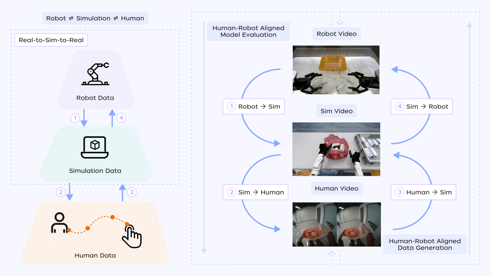
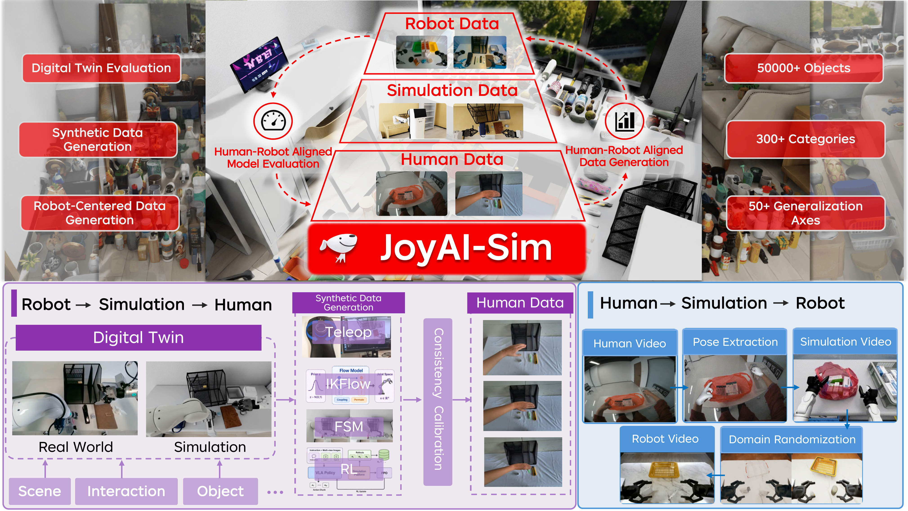
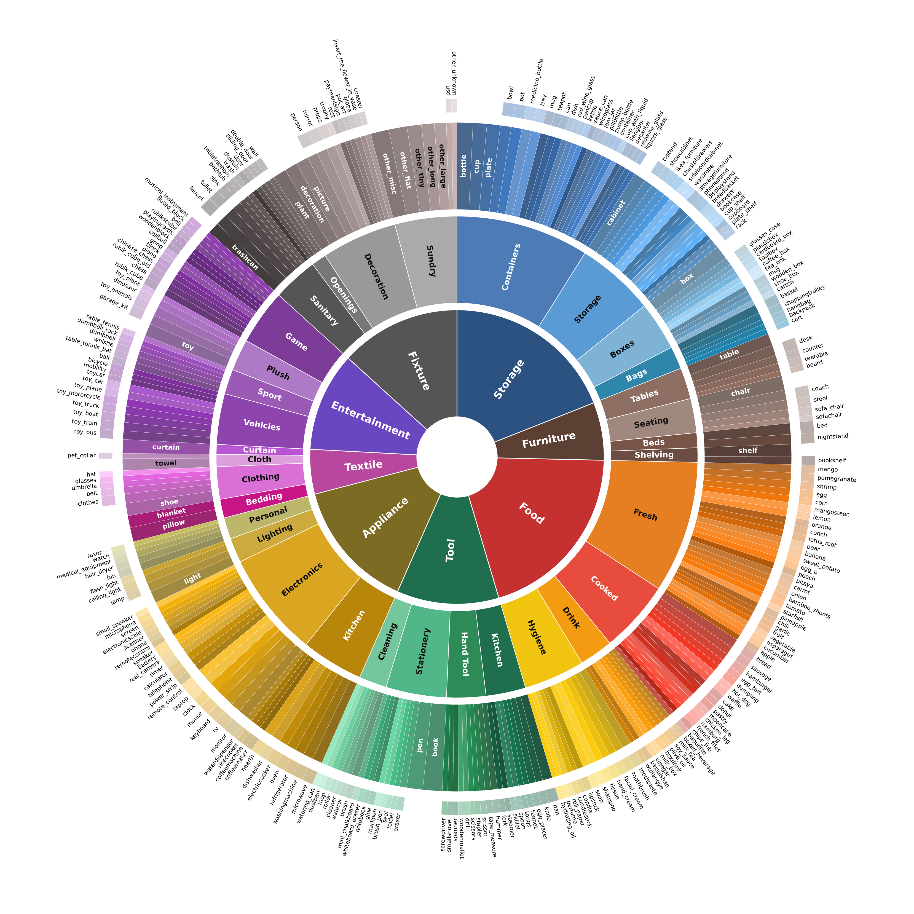
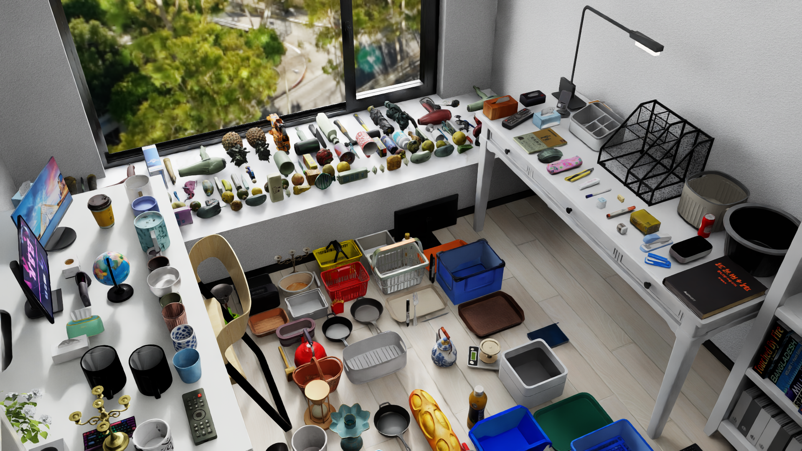
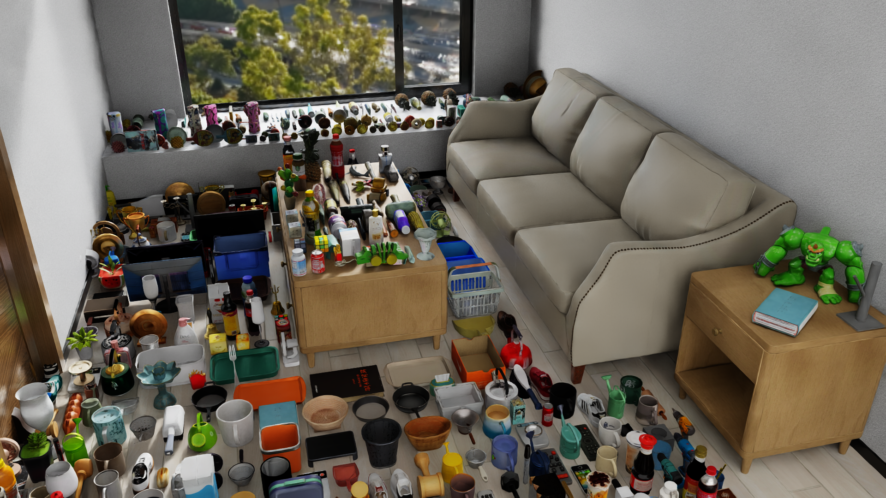

04/16/2026
JoyAI-Sim
Simulation transformation toolchain for embodied data pyramid, one-stop realization of value-added conversion and generalization amplification of embodied data.
Technical Repport

JoyAI-Sim Framework
To address the widely recognized challenges of evaluation efficiency and data bottlenecks in embodied AI, we propose the JoyAI-Sim simulation data transformation toolchain, Robot ⇌ Simulation ⇌ Human, built upon the embodied data pyramid. This toolchain supports both a top-down Robot → Simulation → Human service for efficient model evaluation and a bottom-up Human → Simulation → Robot service for data enrichment.
The two transformation pipelines connect, at one end, scarce robot data that closely reflects real-world deployment, and at the other end, abundant human data that is not tied to a specific robot embodiment. Together, they enable bidirectional integration of data and evaluation. Through the JD Cloud JoyBuilder platform, JoyAI-Sim provides developers with a one-stop embodied simulation service.

Efficient model evaluation based on simulation tool chain
Through the Robot → Simulation → Human simulation toolchain, model evaluation can be conducted more efficiently than on physical robots. Real robot tasks are used to define deployment-oriented goals, while digital twins enable scalable simulation-based evaluation and trajectory synthesis. Human embodied feedback is further introduced to assess the naturalness of simulated actions, thereby forming a closed-loop evaluation pipeline that connects physical robot evaluation, simulation evaluation, and human perception.
Robot → Simulation
Using real robot tasks as anchors, task semantics, object assets, scene layouts, robot embodiments, camera configurations, control interfaces, and success criteria are mapped into digital twins to construct simulation evaluation environments that are reproducible, parallelizable, and diagnosable. JoyAI-Sim builds a Sim-Ready asset library for household scenarios by integrating 3D reconstruction techniques. The library covers 295 fine-grained categories and 53,661 asset instances, and supports adjustments across multiple simulators along dimensions such as robot states, object layouts, instance variations, backgrounds, language instructions, and lighting.

The simulation environments are further grounded through scene-specific asset construction and alignment. JoyAI-Sim reconstructs study-room and living-room household settings as digital twins, so that real-robot evaluation targets, object arrangements, and deployment constraints can be faithfully replayed in simulation.


Robot-to-Sim Alignment Example
This paired rollout uses a real robot task as the anchor and shows the corresponding digital twin alignment. The side-by-side view makes the evaluation setting reproducible and easier to diagnose across object layout, camera viewpoint, and robot embodiment.
Simulation → Human
In simulation, robot trajectories are generated or augmented using FSM+IK, IKFlow, and reinforcement learning, with human embodied feedback further introduced to assess trajectory naturalness. Human operators simulate the execution of these trajectories to identify unreasonable patterns in approach strategies, phase transitions, and motion smoothness. This makes it possible to filter out trajectories that are physically feasible but inconsistent with human motion intuition, thereby improving the quality of both simulation-based evaluation and synthetic data.

This flow illustrates how simulated robot trajectories are projected into human-hand space for first-person replay and inspection. Human embodied feedback then becomes a practical filter for rejecting awkward yet executable trajectories before they are reused for evaluation or training.
Human Embodied Feedback
Synchronized VR recordings expose the human-in-the-loop stage directly: operators inspect approach strategies, contact timing, and motion smoothness, then filter behaviors that are physically feasible but awkward under embodied human judgment.
Data Enrichment Service Based on the Simulation Toolchain
Through the Human → Simulation → Robot simulation toolchain, JoyAI-Sim provides a data enrichment service. Using first-person human demonstration videos as the data source, the toolchain leverages hand motion recovery, scene reconstruction, and digital twin construction to transform human behaviors that are originally independent of any robot embodiment into tasks that can be executed and verified in simulation. It then generates trajectories, states, and action data for robot learning through robot trajectory retargeting, physical feasibility filtering, simulation randomization, and robot-view rendering. In this way, it builds a value-added pipeline that connects human demonstration data, simulation data, and robot data.
In the Human → Simulation stage, hand trajectories, grasp/release events, object interaction relationships, and scene geometry are extracted from human egocentric videos. A simulation-executable digital twin environment is then constructed, transforming human videos from purely visual records into simulation instances with spatial structure, interaction relationships, and task semantics.
In the Simulation → Robot stage, robot embodiment adaptation and physical feasibility validation are performed in the simulation environment. Actions involving joint-limit violations, collisions, unreachable poses, or unreasonable contacts are filtered out. Meanwhile, by varying factors such as object positions, container layouts, object combinations, colors and materials, lighting, and backgrounds, diverse yet physically feasible robot trajectories and observation videos can be derived from the same human demonstration.
Ultimately, large-scale, low-cost human behavior data is transformed into high-value training resources that are verifiable, extensible, and usable for robot learning.
Simulation-to-Robot Output
The resulting output is not just a visualization artifact: it is a robot-centered, multi-view observation stream prepared for downstream robot learning. This sample shows the training-ready visual output after simulation retargeting and robot-view rendering.
Trial and Access
You are welcome to experience the JoyAI-Sim embodied simulation service through the JD Cloud JoyBuilder platform: